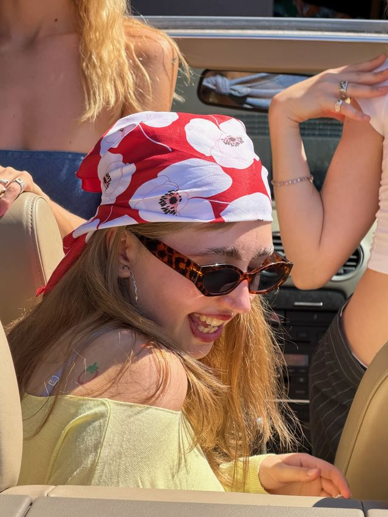
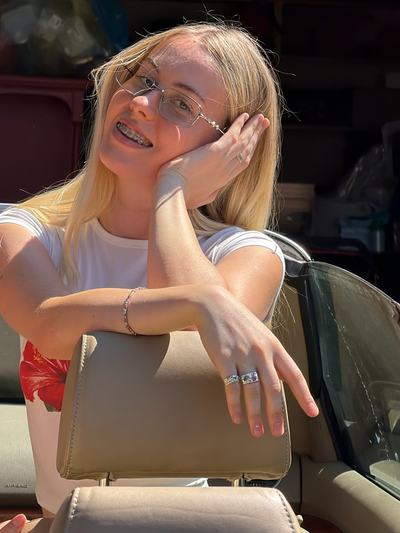
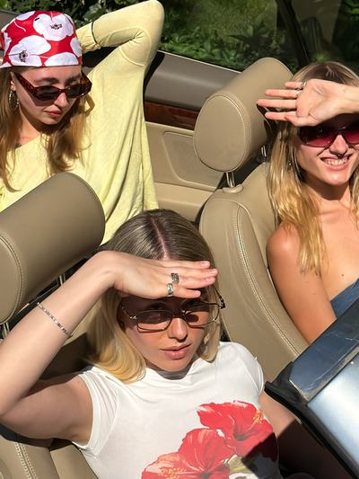
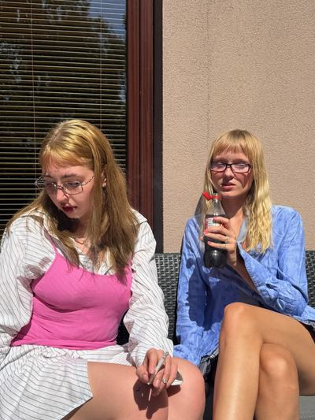
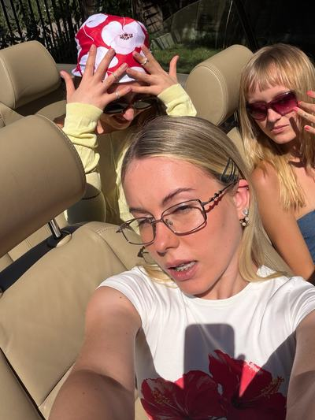
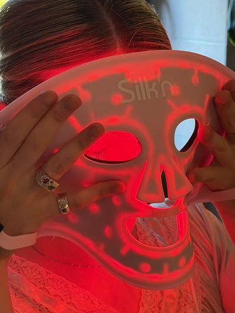
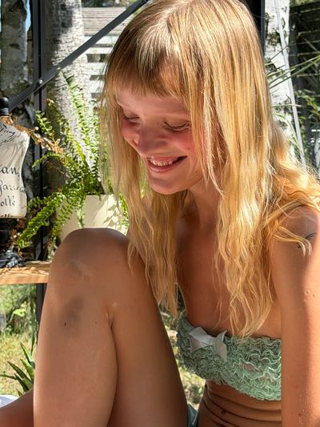
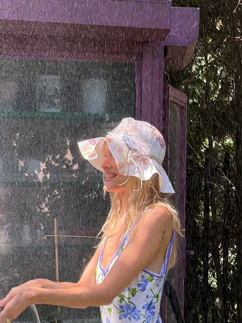

robię pierścionki, które sama chcę nosić
Cześć, jestem Laura. Projektuję i wykuwam każdą rzecz sama — czasem w kilku sztukach, czasem w jednej. Materiał, kamień i rozmiar dobierasz Ty, resztę robię ja.










kilka rzeczy, które lubię najbardziej
nie robię biżuterii do szuflady na wielkie okazje. robię rzeczy, które nosi się codziennie — aż się trochę zetrą i zrobią przez to jeszcze ładniejsze.
— Lauraty składasz, ja robię
wybierasz materiał
Srebro 925, oksydowane, złocone 24k, mosiądz albo pełne złoto 585. Cena widać od razu przy każdej opcji.
dobierasz kamień i kolor
Księżycowy, labradoryt, ametyst, turkus, onyks… a przy każdym kilka wariantów koloru do kliknięcia.
podajesz rozmiar
Od 8 do 24. Przy większych rozmiarach dochodzi trochę metalu, więc cena delikatnie rośnie — widać to na kafelku.
z czego i jak
metale z odzysku
Srebro i złoto najczęściej z przetopu — nowy kształt, stary materiał.
ręcznie, od początku do końca
Odlew, piłowanie, polerowanie — wszystko dzieje się na jednym stole.
krótkie serie
Nie produkuję na magazyn. Robię, kiedy coś mnie złapie, albo kiedy poprosisz.
zróbmy coś tylko twojego
Masz w głowie konkretny kształt albo tylko kolor, który kochasz? Napisz — pogadamy o rozmiarze, materiale i o tym, jak to ma wyglądać.